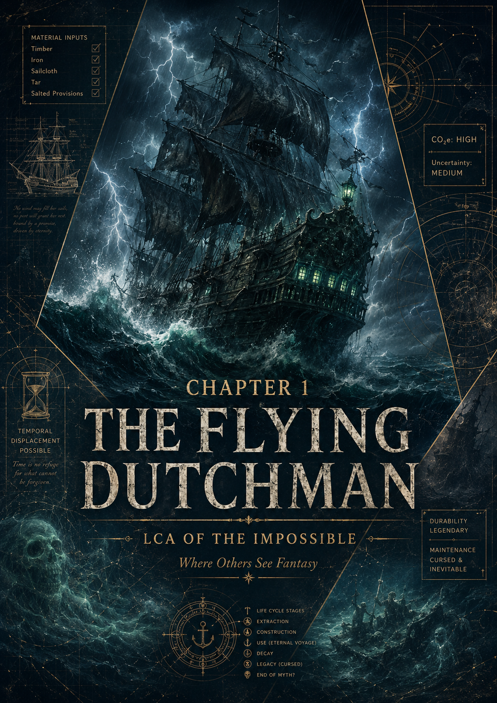

EPISODE #35 · MYTH & LEGENDS
The Flying Dutchman
What is the carbon footprint of a ship condemned to sail forever?
THE SUBJECT
A ship that never reaches harbour.
The Flying Dutchman is reconstructed as a large early-17th-century East Indiaman, using the Batavia as the principal analogy and the Vasa as a scale check. Hull, rigging, armament and operational assumptions are translated into a plausible, transparent LCA inventory.
Functional unit
One year of cursed navigation, with the entire ship construction assigned to the episode result.
Main hotspot
Construction dominates the result, contributing about 97.4% of the main footprint.
DEFRA coverage
Approximately 95.6% of the GWP result was calculated using DEFRA 2026 emission factors.
Sensitivity
When construction is spread over a plausible 25-year life, the result falls to about 34.1 t CO₂e per year.
Episode status
Visual cover integrated. External LinkedIn and carousel links can be added in the next update.
Key interpretation
The footprint is determined less by eternal sailing than by the material weight of becoming a ship in the first place.
THE VERDICT
The ship may never reach harbour.
Its footprint arrived before it ever left.
The sea forgets every wake.
Carbon does not.